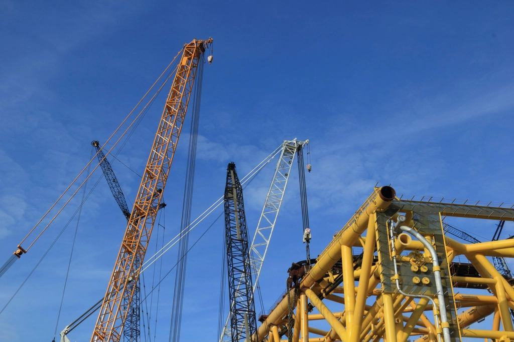

Illustrationsbild
Vägval
Var står vattnet kvar på våren?


En täckdikning är ett trettioårsbeslut för en gård. Därför ska planen gå att hitta den dagen barnen tar över.
Gårdar
Alla referenserGårdar och fält

2025


Uppdragsgivare
Alla referenserGårdar och vattenråd
 Uppdragsgivare
UppdragsgivareGården vid Hornborgasjön
 Uppdragsgivare
UppdragsgivareArdala Prästgård
 Industri
IndustriValle Lantbruksgrupp
 Uppdragsgivare
UppdragsgivareKållands Spannmål
 Energi
EnergiLidans Vattenråd
 Uppdragsgivare
UppdragsgivareVarnhems Mjölkgård
 Uppdragsgivare
UppdragsgivareVara Fröodlare
 Uppdragsgivare
UppdragsgivareSkaraborgs Odlarring
Illustrationsbilder
Från slätten
Alla projektPlogar, planer och dammar
 01
0138 hektar vid Hornborgasjön torrlagda
En gård som inte kunnat så två av fälten före juni sådde i april två år i rad.
Läs mer 02
02Arkivet blir digitalt
Alla 4 200 planerna skannas och läggs in i GIS – de första 1 800 är klara.
Läs mer 03
03Första tvåstegsdiket i Valle
350 meter dike med breda terrasser som svämmar över vid högvatten i stället för åkern.
Läs mer
Så arbetar vi
Boka åkervandringFrån åkervandring till arkivet
 Steg 1 / 4
Steg 1 / 4Åkervandring
Vi går fältet med dig och markerar blöta partier, utlopp och gamla brunnar.
NästaPlan och hektarpris Steg 2 / 4
Steg 2 / 4Plan och hektarpris
Agronomen ritar planen, och du får fast pris per hektar inom två veckor.
NästaPlöjning efter skörd
Steg 3 / 4Plöjning efter skörd
Plogen kommer när jorden bär, oftast i augusti–oktober.
NästaPlanen arkiveras Steg 4 / 4
Steg 4 / 4Planen arkiveras
Du får planen i GIS och på papper – och vi sparar ett exemplar så länge bolaget finns.
Boka åkervandring
Genvägar